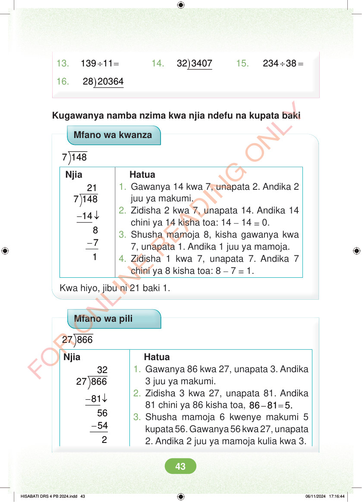

13. ÷ = 139 11 14. ) 32 3407 15. ÷ = 234 38 16. ) 28 20364 Kugawanya namba nzima kwa njia ndefu na kupata baki Mfano wa kwanza 7 148 Njia 21 7 148 - ↓ - 8 7 Hatua 1. Gawanya 14 kwa 7, unapata 2. Andika 2 juu ya makumi. 2. Zidisha 2 kwa 7, unapata 14. Andika 14 chini ya 14 kisha toa: 14 – 14 = 0. 3. Shusha mamoja 8, kisha gawanya kwa 7, unapata 1. Andika 1 juu ya mamoja. 4. Zidisha 1 kwa 7, unapata 7. Andika 7 chini ya 8 kisha toa: 8 – 7 = 1. Kwa hiyo, jibu ni 21 baki 1. Mfano wa pili 27 866 Njia 32 27 866 - ↓ - 56 54 Hatua 1. Gawanya 86 kwa 27, unapata 3. Andika 3 juu ya makumi. 2. Zidisha 3 kwa 27, unapata 81. Andika 81 chini ya 86 kisha toa, – = 86 81 5. 3. Shusha mamoja 6 kwenye makumi 5 kupata 56. Gawanya 56 kwa 27, unapata 2. Andika 2 juu ya mamoja kulia kwa 3. HISABATI DRS 4 PB 2024.indd 43 HISABATI DRS 4 PB 2024.indd 43 06/11/2024 17:16:44 06/11/2024 17:16:44